Композиция — это расположение визуальных
элементов в кадре, продуманное построение
изображения и соотношение отдельных частей,
образующее единое целое.
Главная задача фотографа —
управление вниманием зрителя.
Приёмы композиции
01
Правило третей
Правило третей — один из самых известных
приёмов построения композиции.
Кадр мысленно делится двумя вертикальными
и двумя горизонтальными линиями
на девять равных частей.
Важные объекты часто располагают вдоль
этих линий или в точках их пересечения.
Такой подход помогает создать визуально
сбалансированную и выразительную фотографию.
Например, при съёмке пейзажа горизонт
можно расположить на верхней или нижней
линии, а человека — возле одной
из вертикальных.
Попробуй правило третей
Нажми на кнопку, чтобы наложить
композиционную сетку на фотографию.
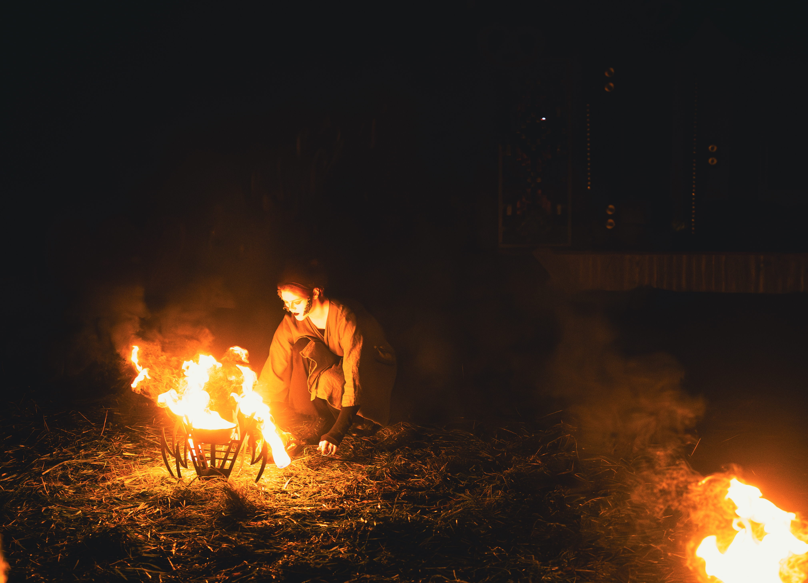
Обрати внимание на четыре точки
пересечения линий.
02
Золотое сечение Фибоначчи
Золотое сечение — принцип пропорционального
деления, при котором отношение целого
к большей части равно отношению большей
части к меньшей.
Его значение приблизительно равно 1,618.
В фотографии этот принцип используется
для создания гармоничной композиции.
Один из способов его визуализации —
спираль, построенная на основе
последовательности Фибоначчи.
Спираль помогает направлять взгляд зрителя
к смысловому центру изображения.
Основной объект можно расположить
в области её сужения, а остальные элементы —
вдоль плавного изгиба.
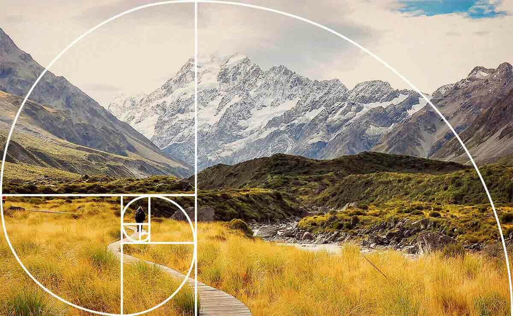
Пример использования золотого сечения
03
Ведущие линии
Ведущие линии — это линии внутри кадра,
которые направляют взгляд зрителя
к определённому объекту или вглубь
изображения.
Ими могут становиться дороги, тропинки,
реки, мосты, заборы, архитектурные элементы
и даже естественные границы света и тени.
Линии помогают создавать глубину,
подчёркивать перспективу и связывать
разные части фотографии
в единую композицию.
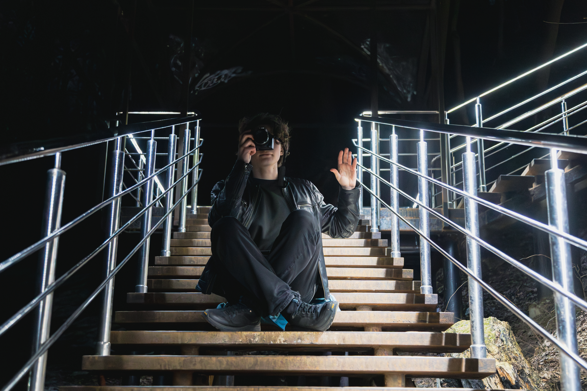
Линии направляют взгляд зрителя
к главному объекту
04
Симметрия и асимметрия
Симметрия возникает, когда элементы
по разные стороны воображаемой оси
выглядят одинаковыми или похожими.
Она создаёт ощущение порядка,
устойчивости и гармонии.
Симметричные композиции часто встречаются
в архитектурной фотографии, отражениях
и снимках природных объектов.
Асимметрия предполагает неравномерное
расположение элементов. При этом кадр
может оставаться сбалансированным
благодаря цвету, размеру и визуальному
весу объектов.
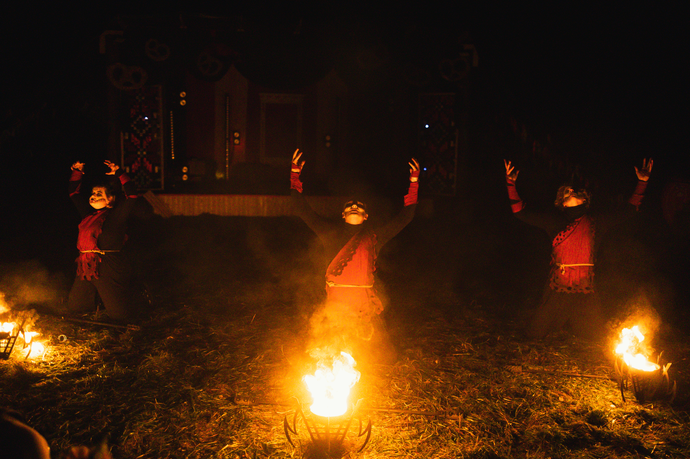
Симметрия
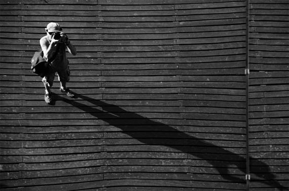
Асимметрия
05
Необычный ракурс
Ракурс — это положение камеры относительно
фотографируемого объекта.
Изменение точки съёмки позволяет
по-новому показать привычные предметы
и окружающее пространство.
Верхний ракурс предполагает съёмку
сверху вниз. Он помогает показать
расположение объектов и их взаимосвязь.
Нижний ракурс, наоборот, создаётся
при съёмке снизу вверх.
Он может подчёркивать масштаб,
высоту и выразительность объекта.
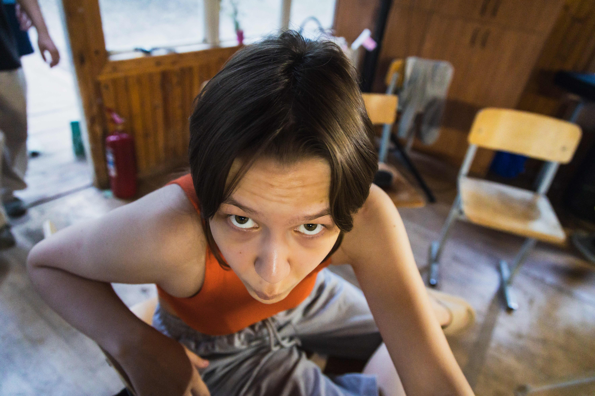
Верхний ракурс
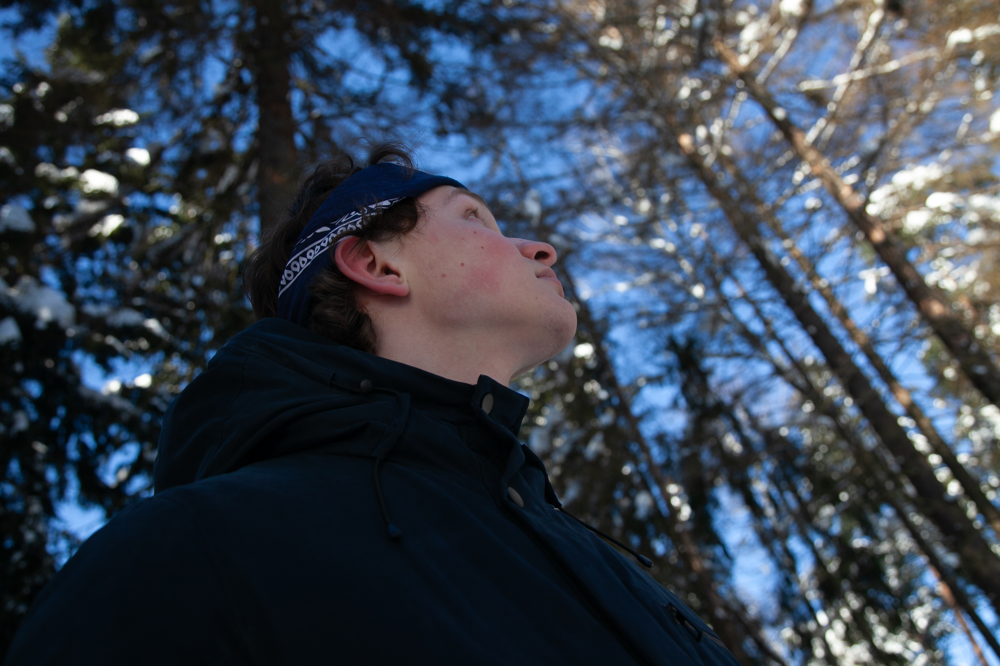
Нижний ракурс
06
Негативное пространство
Негативное пространство — область кадра,
которая не занята главным объектом.
Это может быть небо, вода, стена,
пустой фон или однородная поверхность.
Большое количество свободного пространства
помогает выделить главный объект,
подчеркнуть его одиночество, масштаб
или положение в окружающей среде.
Такой приём часто используется
в минималистичной фотографии
и при создании спокойных,
лаконичных композиций.
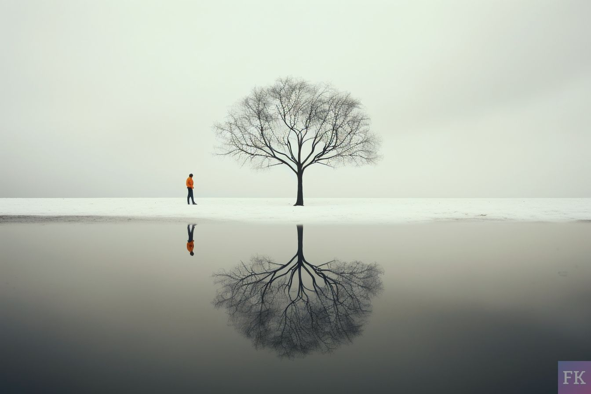
Свободное пространство усиливает
внимание к главному объекту
07
Горизонт и голландский угол
Линия горизонта влияет на ощущение
равновесия и пространства в фотографии.
Горизонтальное положение камеры обычно
создаёт спокойное и устойчивое изображение.
При съёмке пейзажа горизонт можно
расположить выше или ниже центра кадра,
в зависимости от того, чему фотограф
хочет уделить больше внимания —
небу или земле.
Голландский угол — художественный приём,
при котором камера намеренно наклоняется.
Наклонённый горизонт создаёт ощущение
движения, динамики, нестабильности
или напряжения.
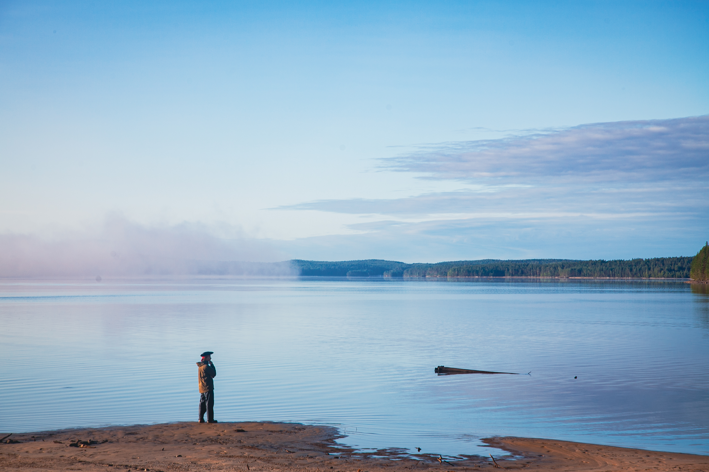
Горизонт
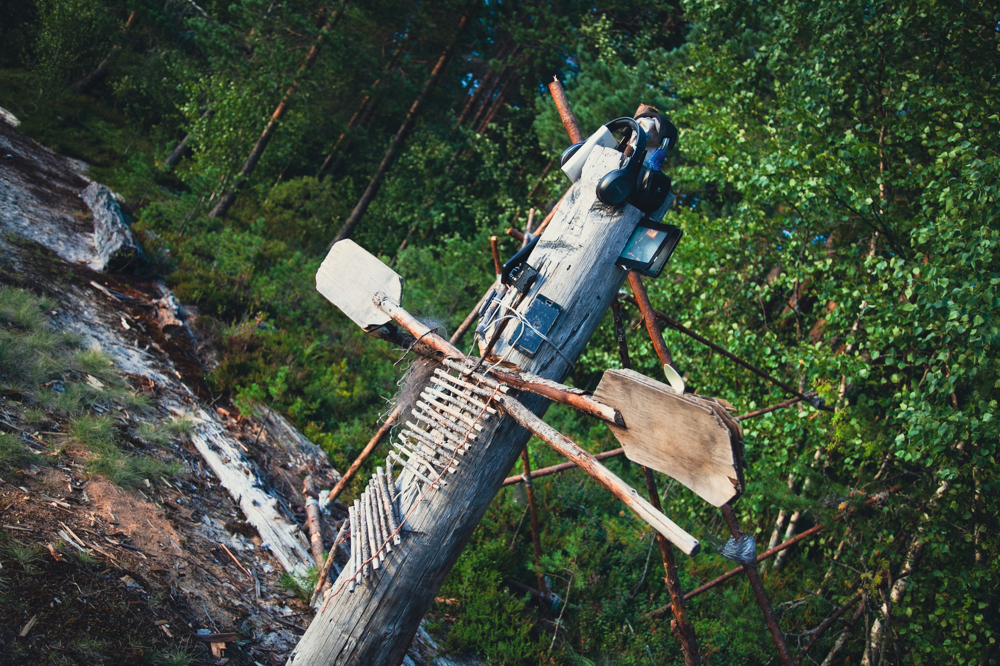
Голландский угол
08
Фрейминг
Фрейминг — композиционный приём,
при котором главный объект окружается
естественной или искусственной рамкой
внутри фотографии.
В качестве такой рамки могут использоваться
окна, дверные проёмы, арки, ветви деревьев
и другие элементы окружающего пространства.
Фрейминг помогает направить внимание
на главный объект, добавить изображению
глубину и создать ощущение,
что зритель наблюдает сцену
через определённое пространство.
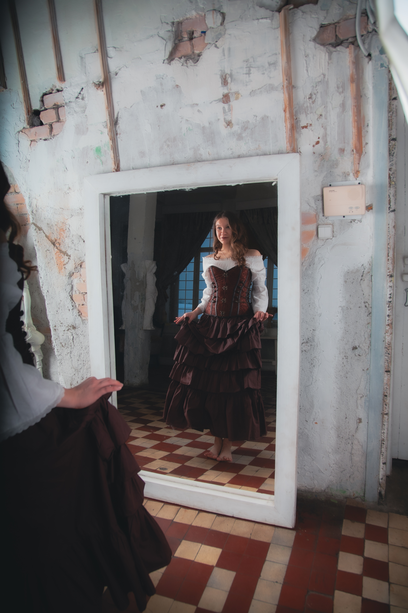
Естественная рамка внутри кадра
09
Световой и тональный контраст
Контраст — различие между отдельными
участками изображения по яркости,
цвету или другим визуальным свойствам.
Световой контраст возникает благодаря
противопоставлению освещённых
и затемнённых областей.
Он помогает подчеркнуть форму объекта
и привлечь к нему внимание.
Тональный контраст связан с различиями
между светлыми и тёмными оттенками.
Например, светлый силуэт может отчётливо
выделяться на тёмном фоне.
Контрастные элементы часто становятся
визуальными центрами композиции,
поскольку взгляд зрителя
естественным образом обращается к ним.
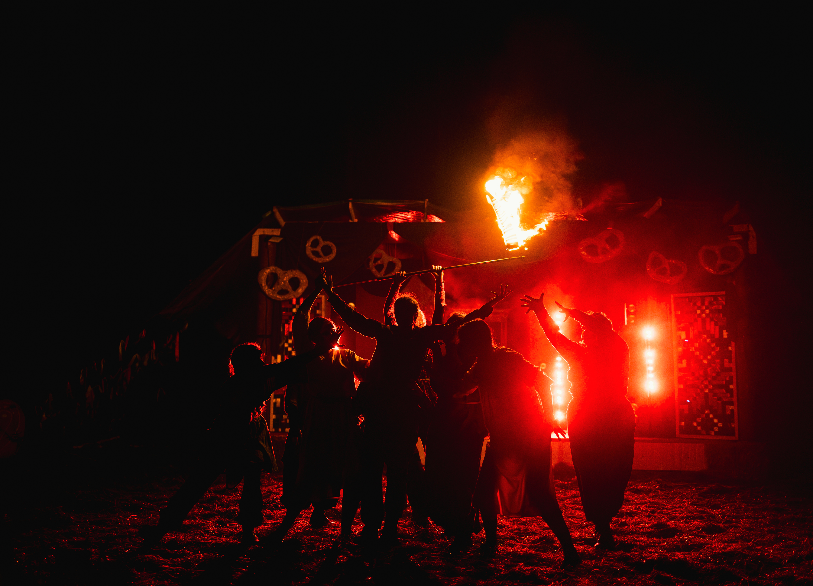
Контраст помогает выделить
главный объект фотографии
10
Паттерны
Паттерн — повторяющийся визуальный элемент
или закономерность, которая формирует
определённый ритм внутри фотографии.
Повторяться могут линии, геометрические
фигуры, цвета, формы и текстуры.
Такие закономерности встречаются
в природе, архитектуре и предметной съёмке.
Повторение создаёт ощущение порядка
и единства изображения.
Особенно выразительным становится кадр,
в котором один элемент нарушает
общий ритм и привлекает внимание.